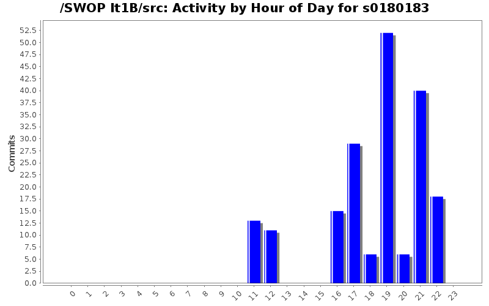
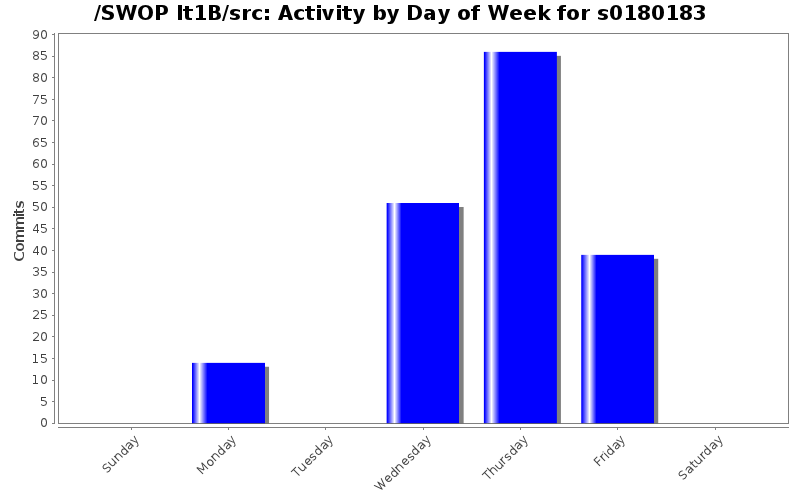
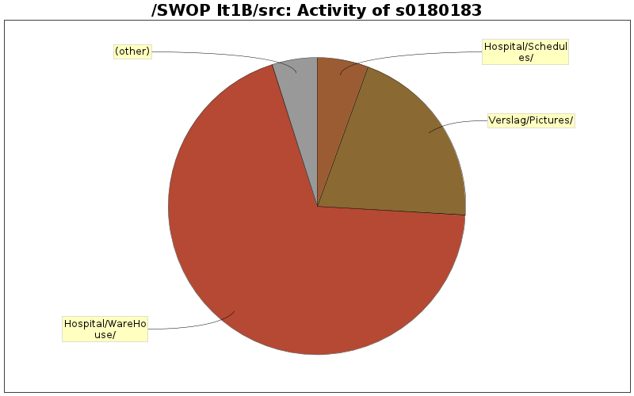

| Directory | Changes | Lines of Code | Lines per Change |
|---|---|---|---|
| Totals | 190 (100.0%) | 1296 (100.0%) | 6.8 |
| Hospital/WareHouse/ | 40 (21.1%) | 896 (69.1%) | 22.4 |
| Verslag/Pictures/ | 4 (2.1%) | 265 (20.4%) | 66.2 |
| Hospital/Schedules/ | 6 (3.2%) | 72 (5.6%) | 12.0 |
| Hospital/World/ | 11 (5.8%) | 42 (3.2%) | 3.8 |
| Hospital/ | 2 (1.1%) | 14 (1.1%) | 7.0 |
| Hospital/Exception/ | 15 (7.9%) | 7 (0.5%) | 0.4 |
| Verslag/ | 17 (8.9%) | 0 (0.0%) | 0.0 |
| HospitalUI/NurseUI/ | 2 (1.1%) | 0 (0.0%) | 0.0 |
| HospitalUI/MainUI/ | 1 (0.5%) | 0 (0.0%) | 0.0 |
| HospitalUI/DoctorUI/ | 1 (0.5%) | 0 (0.0%) | 0.0 |
| HospitalUI/AdminUI/ | 2 (1.1%) | 0 (0.0%) | 0.0 |
| Hospital/WareHouse/OrderPlacers/ | 2 (1.1%) | 0 (0.0%) | 0.0 |
| Hospital/WareHouse/Items/ | 1 (0.5%) | 0 (0.0%) | 0.0 |
| Hospital/WareHouse/ItemQueues/ | 1 (0.5%) | 0 (0.0%) | 0.0 |
| Hospital/WareHouse/FoodStock/ | 1 (0.5%) | 0 (0.0%) | 0.0 |
| Hospital/Treatments/ | 5 (2.6%) | 0 (0.0%) | 0.0 |
| Hospital/People/PeopleFactories/ | 3 (1.6%) | 0 (0.0%) | 0.0 |
| Hospital/People/ | 4 (2.1%) | 0 (0.0%) | 0.0 |
| Hospital/Patient/ | 7 (3.7%) | 0 (0.0%) | 0.0 |
| Hospital/MedicalTest/ | 5 (2.6%) | 0 (0.0%) | 0.0 |
| Hospital/Machine/ | 5 (2.6%) | 0 (0.0%) | 0.0 |
| Hospital/Exception/Arguments/ | 1 (0.5%) | 0 (0.0%) | 0.0 |
| Hospital/Controllers/ | 42 (22.1%) | 0 (0.0%) | 0.0 |
| Hospital/Argument/ | 12 (6.3%) | 0 (0.0%) | 0.0 |

uren toegevoegt
0 lines of code changed in 1 file:
register patient use case compleet gemaakt.
0 lines of code changed in 4 files:
API Documetation via tool
0 lines of code changed in 7 files:
Api verslag
0 lines of code changed in 1 file:
API annotations added.
14 lines of code changed in 34 files:
warehouse encapsulation voor reserving en ne vorige commit die ni goe is gegaan
56 lines of code changed in 22 files:
LIFO naar FIFO veranderd volgens nieuwe opgave
0 lines of code changed in 1 file:
Toevoeging van verslag deel van advance time. ik ga nog een sequence diagram maken voor der bij
0 lines of code changed in 6 files:
completed usecase advanceTime ga nu verslag daarvan in latex zetten
0 lines of code changed in 4 files:
verslag FillStock toegevoegt en in de code de klassse FoodStock om food te verwijderen en te bestellen. het ontwerp is ni helemaal in orde maar ik zeg dit ook in het verslag.
265 lines of code changed in 13 files:
een paar kleine foutjes gefixt aan de warehouse
0 lines of code changed in 6 files:
het eerste stuk van het Warehouse gedeelte van het verslag toegevoegt. ben nu de rest naar latex aan het zetten en de sequence diagramma aan het afmaken. Er is bij mij een probleem waardoor mijn afbeelding niet in het document komt. als iemand daar is naar kan kijken
0 lines of code changed in 5 files:
timeobserver verder gemaakt
29 lines of code changed in 8 files:
warehousecontroller gemaakt en begonnen aann timeobserver
13 lines of code changed in 6 files:
ExpiraringItem veranderd naar ExpiringItem
0 lines of code changed in 4 files:
WareHouse en bijhorende klassen toegevoegt
387 lines of code changed in 20 files:
deels afgewerkte stock dingen
453 lines of code changed in 9 files:
PatientFileTest toegevoegt en gemerged met de vorige PatientFileTest
heb toString in medicaltest aangepast en opgesplitst naar advancedstring
0 lines of code changed in 5 files:
CheckInPatientTest toegevoegd
scheduling bij check in toegevoegd heb gezien dat iemand anders dit gisteren avond ook al had gedaan. Aangezien ik verschillende bugs heb gevonden bij het schedulen en deze heb gefixt heb ik mijn versie gecommit. Het grootste verschil is dat ik een nieuwe klasse met interface appointable heb gemaakt DoctorPatientAppointment. Ben niet zeker of het nodig is, maar kan makkeleijk weggehaald worden.
heb verder nog een klasse AllTests gemaakt waarin alle testen staan zodat er makkelijk alle testen kunnen gerunt worden.
Ik heb nog vershillende kleine aanpassingen gemaakt hier en daar een ook een beetje commentaar toegevoegt.
72 lines of code changed in 13 files:
testen en excetions toegevoegd
0 lines of code changed in 6 files:
(1 more)